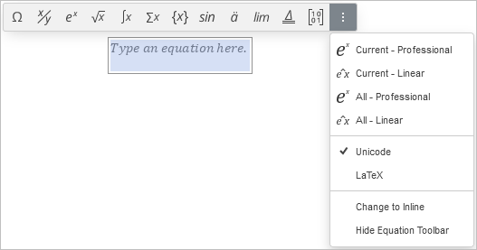
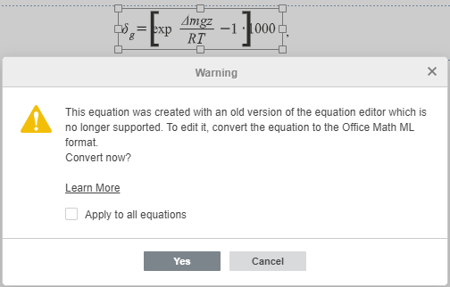

Umetanje jednačina
Document Editor omogućava pravljenje jednačina koristeći ugrađene šablone, njihovo uređivanje i umetanje specijalnih karaktera (uključujući matematičke operatore, grčka slova, akcentovane znakove itd.).
Dodavanje nove jednačine
Da biste umetnuli jednačinu iz galerije,
- postavite kursor unutar željenog reda,
- prebacite se na karticu Insert na gornjoj alatnoj traci,
- kliknite strelicu pored ikone Equation na gornjoj alatnoj traci,
-
izaberite željenu kategoriju jednačine u alatnoj traci iznad umetnute jednačine,
ili
u otvorenom padajućem meniju izaberite kategoriju jednačine koja vam je potrebna.
Trenutno dostupne kategorije su: Simboli, Frakcije, Scriptovi, Radikali, Integrali, Veliki operatori, Zagrade, Funkcije, Akcenti, Granice i logaritmi, Operatori, Matrice,
- kliknite simbol Equation Settings u alatnoj traci iznad umetnute jednačine za dodatna podešavanja, npr. Unicode ili LaTeX, Professional ili Linear, i Change to Inline,
- kliknite određeni simbol/jednačinu u odgovarajućem setu šablona,
- da biste sakrili alatnu traku, kliknite opciju Hide Equation Toolbar u Equation Settings.

Izabrani simbol/jednačina biće umetnuta na poziciju kursora. Ako je izabrani red prazan, jednačina će biti centrirana. Da biste je poravnali levo ili desno, kliknite na kutiju sa jednačinom i koristite ikone ili na kartici Home gornje alatne trake.
Svaki šablon jednačine predstavlja set slotova. Slot je mesto za svaki element koji čini jednačinu. Prazan slot (takođe nazvan placeholder) ima isprekidanu ivicu . Potrebno je popuniti sve placeholders odgovarajućim vrednostima.
Napomena: da biste počeli sa kreiranjem jednačine, možete koristiti i prečicu Alt + = na tastaturi.
Moguće je dodati i natpis jednačine. Za više informacija o radu sa natpisima, pogledajte ovaj članak.
Unos vrednosti
Tačka umetanja pokazuje gde će se pojaviti sledeći karakter. Da biste precizno postavili tačku umetanja, kliknite unutar placeholdera i koristite strelice na tastaturi za pomeranje po karakteru levo/desno ili po liniji gore/dole.
Ako želite da kreirate novi placeholder ispod slot-a sa tačkom umetanja u izabranom šablonu, pritisnite Enter.
Kada je tačka umetanja postavljena, možete popuniti placeholder:
- upišite željenu numeričku ili literalnu vrednost sa tastature,
- ubacite specijalni karakter koristeći paletu Symbols iz menija Equation na kartici Insert ili kucanjem sa tastature (pogledajte opis opcije Math AutoCorrect),
- dodajte još jedan šablon jednačine iz palete da kreirate kompleksnu ugnježdenu jednačinu. Veličina primarne jednačine će se automatski prilagoditi sadržaju. Veličina elemenata ugnježdene jednačine zavisi od veličine primarnog placeholder-a, ali ne može biti manja od veličine sub-subscript-a.
Za dodavanje novih elemenata jednačine možete koristiti i desni klik meni:
- Da dodate novi argument pre ili posle postojećeg u okviru Zagrada, desni klik na postojeći argument i izaberite Insert argument before/after.
- Da dodate novu jednačinu unutar Cases sa više uslova iz Zagrada grupe, desni klik na prazni placeholder ili već unetu jednačinu i izaberite Insert equation before/after.
- Da dodate red ili kolonu u Matrix, desni klik na placeholder unutar matrice, izaberite Insert, zatim Row Above/Below ili Column Left/Right.
Napomena: trenutno, jednačine se ne mogu unositi linearno, npr. \sqrt(4&x^3).
Kada unosite vrednosti matematičkih izraza, Spacebar nije potreban jer se razmaci između karaktera i znakova operacija postavljaju automatski.
Ako je jednačina predugačka za jedan red, automatski se vrši prelom reda. Možete umetnuti i manuelni prelom desnim klikom na operator i izborom Insert manual break. Operator će započeti novi red. Za poravnanje novog reda sa operatorom prethodnog, koristite Tab. Za brisanje manualnog preloma, desni klik na operator i izaberite Delete manual break.
Formatiranje jednačina
Da povećate ili smanjite veličinu fonta jednačine, kliknite unutar kutije jednačine i koristite dugmad i na kartici Home ili izaberite veličinu fonta iz liste. Svi elementi jednačine će se proporcionalno promeniti.
Slova unutar jednačine su podrazumevano kurziv. Po potrebi možete promeniti stil fonta (bold, italic, strikeout) ili boju za celu jednačinu ili njen deo. Underline stil se može primeniti samo na celu jednačinu. Izaberite deo klikom i prevlačenjem. Izabrani deo će biti plav. Zatim koristite dugmad na kartici Home za formatiranje. Na primer, možete ukloniti kurziv za obične reči koje nisu promenljive ili konstante.
Za modifikaciju određenih elemenata jednačine možete koristiti i desni klik meni:
- Za promenu formata Frakcija, desni klik na frakciju i izaberite Change to skewed/linear/stacked fraction (opcije zavise od tipa frakcije).
- Za promenu pozicije Scriptova u odnosu na tekst, desni klik na jednačinu i izaberite Scripts before/after text.
- Za promenu veličine argumenta za Scripts, Radicals, Integrals, Large Operators, Limits and Logarithms, Operators i šablone sa grupisanim karakterima iz Accents grupe, desni klik na argument i izaberite Increase/Decrease argument size.
- Da prikažete ili sakrijete prazan stepen za Radical, desni klik na radikal i izaberite Hide/Show degree.
- Da prikažete ili sakrijete prazan limit za Integral ili Large Operator, desni klik na jednačinu i izaberite Hide/Show top/bottom limit.
- Za promenu pozicije limita u odnosu na operator za Integrals ili Large Operators, desni klik i izaberite Change limits location.
- Za promenu pozicije limita u odnosu na tekst za Limits and Logarithms i šablone iz Accents grupe, desni klik i izaberite Limit over/under text.
- Da izaberete koje Zagrade da se prikazuju, desni klik i izaberite Hide/Show opening/closing bracket.
- Za kontrolu veličine Zagrada, desni klik i opcija Stretch brackets je podrazumevana; možete je isključiti da zagrade ne rastu automatski. Kada je aktivna, možete koristiti i Match brackets to argument height.
- Za promenu pozicije karaktera u odnosu na tekst za over/under bars iz Accents, desni klik i izaberite Char/Bar over/under text.
- Za izbor ivica Boxed formula iz Accents, desni klik i Border properties, zatim Hide/Show top/bottom/left/right border ili Add/Hide horizontal/vertical/diagonal line.
- Da prikažete ili sakrijete prazne placeholders u Matrix, desni klik i Hide/Show placeholder.
Za poravnavanje elemenata jednačine koristite desni klik meni:
- Za poravnanje jednačina unutar Cases sa više uslova, desni klik na jednačinu, Alignment, zatim izaberite Top, Center, Bottom.
- Za vertikalno poravnanje Matrix, desni klik, Matrix Alignment, izaberite Top, Center, Bottom.
- Za horizontalno poravnanje elemenata unutar kolone Matrix, desni klik na placeholder, Column Alignment, izaberite Left, Center, Right.
Brisanje elemenata jednačine
Da obrišete deo jednačine, izaberite ga prevlačenjem miša ili držanjem Shift i strelicama, zatim pritisnite Delete.
Slot se može obrisati samo zajedno sa šablonom kojem pripada.
Za brisanje cele jednačine, izaberite je celokupno prevlačenjem ili dvostrukim klikom na kutiju i pritisnite Delete.
Za brisanje elemenata jednačine možete koristiti i desni klik meni:
- Za brisanje Radical, desni klik i Delete radical.
- Za brisanje Subscript ili Superscript, desni klik i Remove subscript/superscript. Ako script ide pre teksta, dostupno Remove scripts.
- Za brisanje Zagrada, desni klik i Delete enclosing characters ili Delete enclosing characters and separators.
- Za brisanje argumenta u Zagrada sa više argumenata, desni klik na argument i Delete argument.
- Za brisanje jednačine u Cases sa više uslova, desni klik i Delete equation. Takođe važi za druge tipove jednačina ako su dodati placeholderi.
- Za brisanje Limit, desni klik i Remove limit.
- Za brisanje Accent, desni klik i Remove accent character, Delete char ili Remove bar (opcije zavise od akcenta).
- Za brisanje reda ili kolone u Matrix, desni klik na placeholder, Delete, zatim Delete Row/Column.
Konvertovanje jednačina
Ako otvorite dokument sa jednačinama kreiranim starijom verzijom editor-a (npr. MS Office pre 2007), potrebno je konvertovati ih u Office Math ML format da bi mogli da ih uređujete.
Da konvertujete jednačinu, dvokliknite je. Pojaviće se upozoravajući prozor:

Za konverziju samo izabrane jednačine, kliknite Yes. Za sve jednačine u dokumentu, čekirajte Apply to all equations i kliknite Yes.
Nakon konverzije, jednačina je spremna za uređivanje.